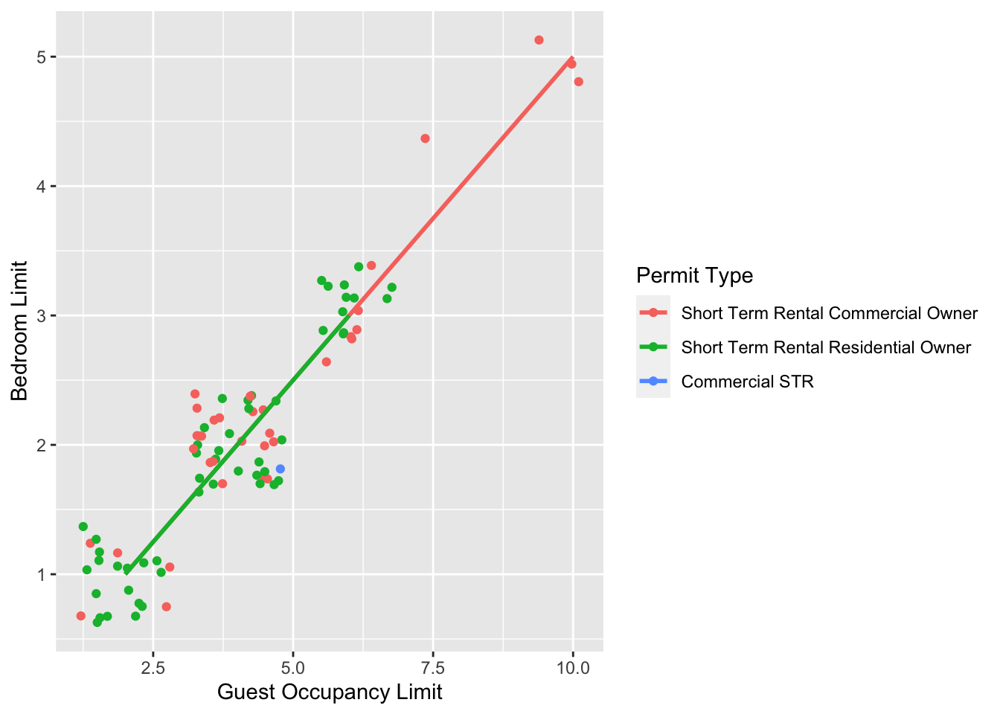
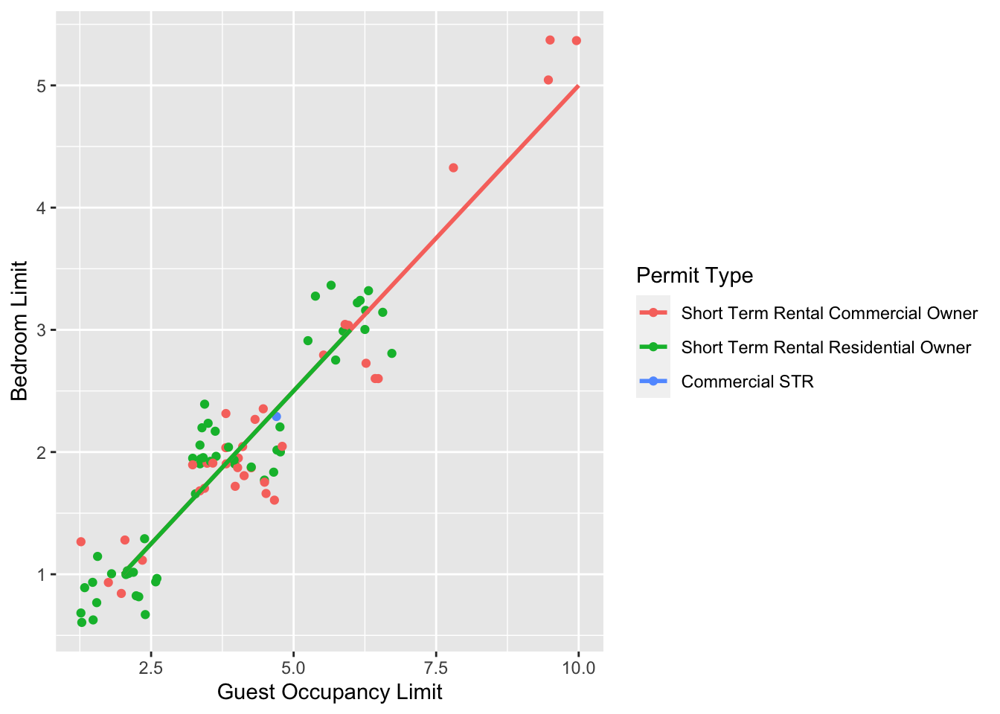
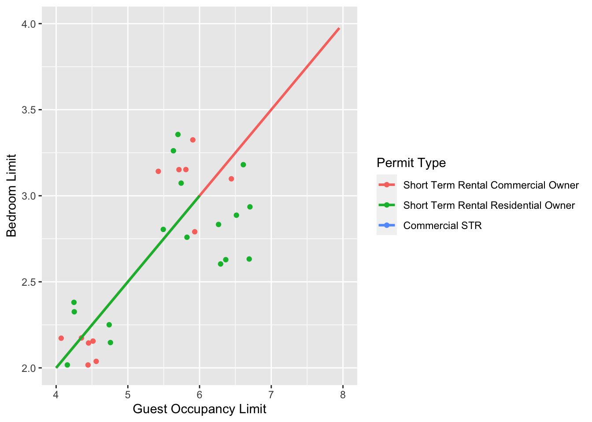
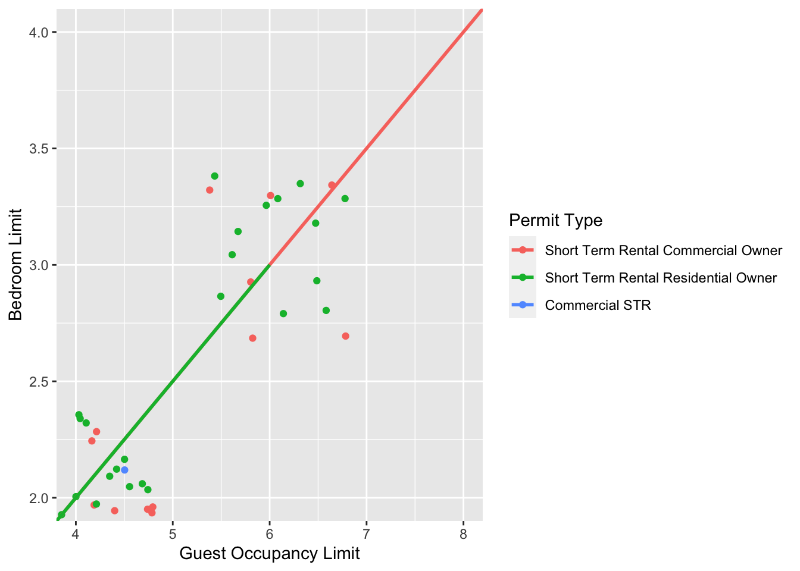
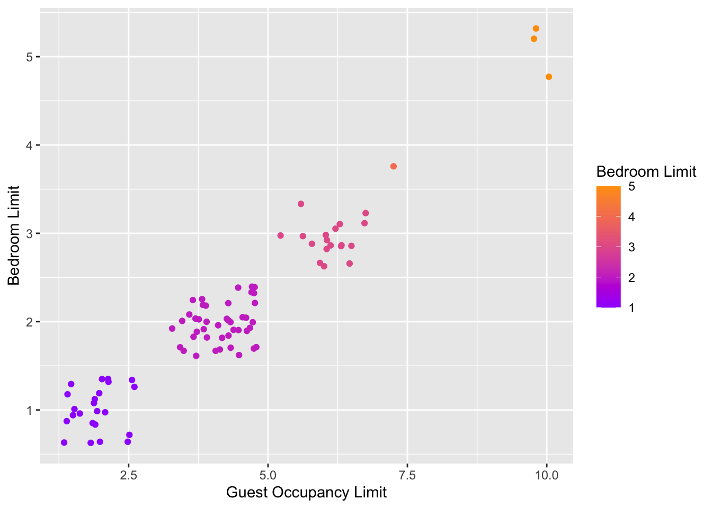

5.3 Tips and tricks
For this section we’ll use various versions of the final figure without including the facet_grid(). We do so only to allow the changes to be more apparent. With this plot, we’ll run through some tips and tricks that we wish we’d learnt when we started using ggplot2.
5.3.1 Statistics layer
The statistics layer is often ignored in favour of working solely with the geometry layer, as we’ve done above. The two are largely interchangeable, though the relative rareness of online help and discussions on the statistics layer seems to have relegated it to almost a state of anonymity. There is real value in at least understanding what the statistics layer is doing, even if you don’t ever need to make direct use of it. It is perhaps most clear what the statistical layer is doing in the early geom_smooth() figure we made.
ggplot(aes(x = `Guest Occupancy Limit`, y = `Bedroom Limit`, color = `Permit Type`), data = df) +
geom_jitter() +
geom_smooth(method = "lm", se = FALSE)## `geom_smooth()` using formula 'y ~ x'
Nowhere in our dataset are there columns for either the y-intercept or the gradient needed to draw the straight line, yet we’ve managed to draw one. The statistics layer calculates these based on our data, without us necessarily knowing what we’ve done. It’s also the engine behind converting your data into counts for producing a bar chart, or densities for violin plots, or summary statistics for boxplots and so on.
It’s entirely possible that you’ll be able to use ggplot2 for the vast majority of you plotting without ever consulting the statistics layer in any more detail than we have here (simply by “calling” - unknowingly - to it via the geometry layer), but be aware that it exists.
If we wanted to recreate the above figure using the statistics layer we would do it like this:

ggplot(aes(x = `Guest Occupancy Limit`, y = `Bedroom Limit`, color = `Permit Type`), data = df) +
geom_jitter() +
# using stat_smooth instead of geom_smooth
stat_smooth(geom = "smooth", method = "lm", se = FALSE)
While in this example it doesn’t make a difference which we use, in other cases we may want to use the calculated statistics in alternative ways. We won’t get into it, but see ?after_stat if you are interested.
5.3.2 Axis limits and zooms
Fairly often, you may want to limit the range of your axes. Maybe you want to focus a particular part of the data to really tease apart any patterns occurring there. Whatever the reason, it’s a useful skill, and with most things code related, there’s a couple of ways to do this. We’ll show two here; xlim() and ylim(), and coord_cartesian(). Using both of these we’ll set the x axis to only show data between 10 and 15 g and the y axis to only show the area of the shoot between 50 and 150 mm2. We’ll start with limiting the axes:

ggplot(aes(x = `Guest Occupancy Limit`, y = `Bedroom Limit`, color = `Permit Type`), data = df) +
geom_jitter() +
geom_smooth(method = "lm", se = FALSE)+
# New x and y limits
xlim(c(4, 8)) +
ylim(c(2, 4))
A alternative method coord_cartesian(). However, there are pretty big differences.coord_cartesian() works in much the same way, but instead of chopping out data, it instead zooms in. Doing so means that the entire dataset is maintained (and any trends are maintained). In particular it matters of geom_smooth or stat_*.
ggplot(aes(x = `Guest Occupancy Limit`, y = `Bedroom Limit`, color = `Permit Type`), data = df) +
geom_jitter() +
geom_smooth(method = "lm", se = FALSE)+
# Zooming in rather than chopping out
coord_cartesian(xlim = c(4, 8), ylim = c(2, 4))
Notice now that the trends are maintained (as the lines are being informed by data which are off-screen). We would generally advise using coord_cartesian() as it protects you against possible misinterpretations.
5.3.3 Layering layers
Remember that ggplot2 works like painting. Let’s imagine we were one of the great renaissance painters. We’ve just finished the focal point of our painting, the half naked Duke of Toulouse looking moody or something. Now that we’ve finished painting the honourable Duke, we proceed to paint the background, a beautiful landscape showing the Pyrenees mountains in the distance. Unfortunately, in doing so we’ve painted over the Duke because the order of our layers was wrong. We get our heads chopped off, but learn a valuable lesson in the process: the order of layers matter.
The exact same is true in ggplot2 (minus the chopping off of heads, though your situation may vary). The layers are read and “painted” in order of their appearance in the code. If geom_point() comes before geom_col(), then your points may well end up being hidden. To fix this is easy, we simply need to move the layers up or down in the code. A useful tip for those using Rstudio, is that you can move lines of code especially easily. Simply click on a line of code, hold down Alt and then press either the up or down arrows, and the entire line will move up or down as well. For multiple lines of code, simply highlight all those lines you want to move and press Alt + Up/Down arrow.
5.3.4 Continuous colours
Instead of categorical colours, such as we’ve used for Permit Type, what if instead we wanted a gradient? To illustrate this, we’ll remove the trend lines to highlight the changes we make. We’ll also be using the Bedroom Limit variable to specify the colour that points should be coloured. We have three options that we’ll use here; the default colour scheme, the scale_colour_gradient() scheme, and an alternative schemescale_colour_gradient2(). Remember that we’ll also need to change our label for the legend.

ggplot(aes(x = `Guest Occupancy Limit`, y = `Bedroom Limit`, color = `Bedroom Limit`), data = df) +
geom_jitter() +
# Adding scale_colour_gradient
scale_colour_gradient(low = "#9F00FF", high = "#FF9F00") 